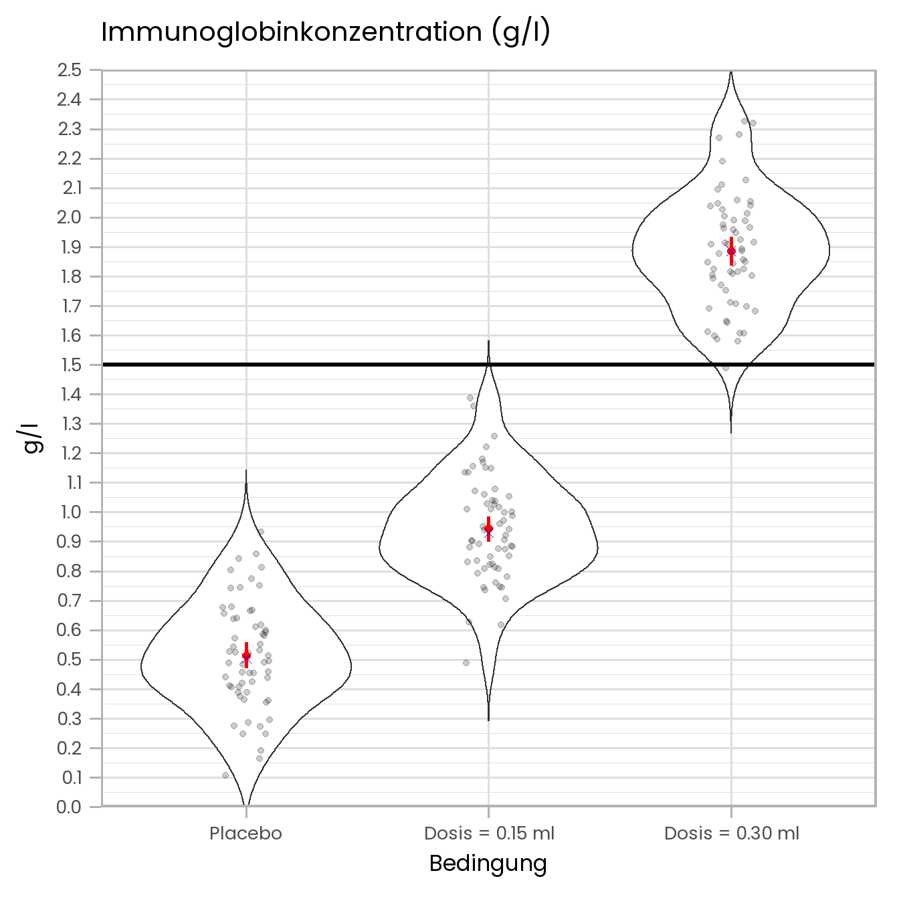

In Sitzung 6 haben Sie gelernt, wie man mittels t-Tests Mittelwertsunterschiedshypothesen testen kann. Die Hypothesen bezogen sich dabei immer auf die Unterschiede zwischen maximal zwei Mittelwerten (z.B. Unterscheiden sich die Cholesterinwerte von Personen, die sich vegan ernähren, von denen von Personen, die sich nicht vegan ernähren.). Was aber, wenn sich eine Hypothese auf mehr als zwei Mittelwerte bezieht? In dieser Sitzung sollen Sie die Kontrastanalyse und die Trendanalyse als ein mögliches statistisches Verfahren für diesen Fall kennenlernen. Diese Analysen können als eine Erweiterung des T-Tests für den Fall von mehr als zwei Mittelwerten betrachtet werden. Andersherum könnte man auch sagen, dass der t-Test ein Spezialfall der Kontrastanalyse für den Unterschied von zwei Mittelwerten ist (dazu später mehr).
In dieser Sitzung beschäftigen wir uns mit Kontrast- bzw. Trendanalysen für den einfaktoriellen Fall (d.h., für Fälle, in denen es nur eine UV bzw. Prädiktorvariable gibt). Im Sommersemester werden wir auch Kontrastanalysen für mehrfaktorielle und Versuchsdesigns kennenlernen.
Stellen Sie sich folgendes Szenario vor: Ein neuartiges Virus verbreitet sich und mögliche Impfstoffe befinden sich derzeitig noch in der Entwicklung. Die VirologInnen eines Forschungsinstituts haben kürzlich eine erste klinische Wirksamkeitsstudie für einen potenziellen Impfstoff durchgeführt, nachdem sich dieser in vorangegangenen Tierversuchen bereits als vielversprechend gezeigt hatte. An der Studie nahmen 180 Versuchspersonen teil, die zufällig in drei verschiedene Gruppen mit jeweils 60 ProbandInnen aufgeteilt wurden. Die erste Gruppe bekam lediglich einen Placebo (Kochsalzlösung) injiziert. Die beiden anderen Gruppen bekamen jeweils den Impfstoff injiziert, allerdings in verschiedenen Dosen. Die erste Impfgruppe bekam eine Dosis von 0.15 ml injiziert. Die zweite Gruppe bekam die Doppelte Dosis (0.30 ml) injiziert. Nach 14 Tagen wurde bei allen Versuchspersonen die Menge von Antikörpern im Blut gemessen. Gemessen wurde die Immunglobinkonzentration (in g/l). Es wird vermutet, dass die Immunglobinkonzentration mindestens 1.5 g/l betragen muss, wenn ein Impfstoff erfolgreich gegen das Virus schützen soll.
Die ForscherInnen haben folgende Hypothesen aufgestellt:
Impfstoffeffekt: Bei einer Injektion mit Impfstoff ist die Immunglobinkonzentration höher als bei Injektion des Placebos.
Dosierungseffekt: Wenn 0.30 ml Impfstoff injiziert werden, ist die Immunglobinkonzentration höher, als wenn nur 0.15 ml Impfstoff injiziert werden.
Schwelleneffekt: Die Injektion von 0.30 ml wird zu einer ausreichenden Immunglobinkonzentration führen, aber eventuell reicht auch schon die kleinere Dosis.
Die Excel-Datei mit den Daten der Studie finden Sie hier.
Unten sehen sie eine Abbildung (die man in der Form so leider nicht in Excel erstellen kann), die die Ergebnisse der Studie zusammenfasst. Die roten Punkte sind die Gruppenmittelwerte (Fehlerbalken = 95% KI) und die blauen Kreuze die Mediane. Die grauen Punkte sind die Immunglobinwerte der jeweiligen Versuchspersonen. Die “Violinplots” (s. hier) beschreiben die Verteilung der Daten. Die horizontale schwarze Linie bei 1.5 g/l zeigt den Schwellenwert für eine ausreichende Immunglobinkonzentration an. Unter der Abbildung sehen Sie noch eine Tabelle mit deskriptiven Statistiken.
Anhand dieser Abbildung können Sie die dritte Hypothese bereits beantworten. Eine Impfdosis von 0,30 ml scheint ausreichend zu sein, während eine Dosis von 0.15 ml zu klein ist.
Um die Hypothesen 1) und 2) zu testen, führen wir im Folgenden eine Kontrastanalyse durch.

## : Placebo
## median mean SE.mean CI.mean.0.95 var std.dev coef.var
## 0.50420000 0.51312500 0.02350586 0.04703512 0.03315153 0.18207562 0.35483678
## ----------------------------------------------------------------------------------------------------------------
## : 0.15 ml
## median mean SE.mean CI.mean.0.95 var std.dev coef.var
## 0.93055000 0.94305667 0.02279833 0.04561935 0.03118583 0.17659509 0.18725820
## ----------------------------------------------------------------------------------------------------------------
## : 0.30 ml
## median mean SE.mean CI.mean.0.95 var std.dev coef.var
## 1.88945000 1.89701167 0.02723980 0.05450671 0.04452040 0.21099858 0.11122682Ein “Kontrast” \(D\) ist die Summe gewichteter Mittelwerte. Bei der Kontrastanalyse wird getestet, wie wahrscheinlich ein empirisch ermittelter Wert von \(D\) (oder ein noch extremerer Wert) gefunden wird, wenn der wahre Wert von \(D\) null ist (dieses Prinzip sollte Ihnen bekannt vorkommen). Übersetzen wir die von den ForscherInnen aufgestellten Hypothesen zunächst in statistische Hypothesenpaare über Kontraste.
Die erste Hypothese war, dass eine Impfung mit Impfstoff zu höherer Antikörperkonzentration führt als die Injektion eines Placebos:
Die zweite Hypothese war, dass die höhere Impfdosis zu einer höheren Antikörperkonzentration führt, als die niedrige Dosis:
Berechnen wir nun die empirischen D-Werte und die dazugehörigen Teststatistiken (t-Werte). Wie oben bereits angesprochen wurde, handelt es sich bei Kontrasten um die Summe gewichteter Mittelwerte. Ganz zu Beginn wurde auch erwähnt, dass der t-Test als Spezialfall eines Kontrasts angesehen werden kann, bei dem nur zwei Mittelwerte verglichen bzw. kontrastiert werden.
Um zu verdeutlichen, was mit “Summe gewichteter Mittelwerte” gemeint ist, und um zu sehen, warum der “klassische” t-Test eigentlich ein Spezialfall der Kontrastanalyse ist, beginnen wir unsere Analyse mit der zweiten Hypothese, in der die Mittelwerte der beiden Impfgruppen gegeneinander getestet werden sollen.
Hohe Impfdosis vs. niedrige Impfdosis:
In der Versuchsgruppe, in der 0.30 ml Impfstoff injiziert wurden, beträgt die mittlere Immunglobinkonzentration \(M~= 1.9\) g/l. In der Versuchsgruppe mit 0.15 ml Impfstoff ist die mittlere Konzentration niedriger, nämlich \(M~= 0.94\) g/l. Um zu prüfen, wie plausibel es ist, dass dieser Stichprobenunterschied einfach nur Zufall ist, würden Sie nun eigentlich einen t-Test durchführen und dabei den empirischen t-Wert folgendermaßen ermitteln:
\(t~= \frac{M_{0.30 ml} - M_{0.15ml}}{SE_{Diff}}\).
Im Zähler der t-Formel steht die Differenz der beiden Stichprobenmittelwerte. Diese Differenz ist tatsächlich ein Kontrast (\(D\)), denn diese Differenz lässt sich auch als “Summe gewichteter Mittelwerte” ausdrücken:
\(t~= \frac{(1\cdot M_{0.30 ml}) + (-1 \cdot M_{0.15ml})}{SE_{Diff}}~= \frac{D}{SE_{Diff}}\).
In der obigen Formel werden beide Mittelwerte gleichstark (mit \(|1|\)) gewichtet. Allerdings bekommt der zweite Mittelwert ein negatives Gewicht (\(-\)). Die Summe der beiden auf diese Weise gewichteten Mittelwerte (der Kontrast \(D\)) ist dann identisch zur Mittelwertsdifferenz (was Sie sehen, wenn sie die Klammern wieder auflösen).
Schauen wir uns nun die erste Hypothese der ForscherInnen an, die besagt, dass eine Impfung mit Impfstoff zu mehr Antikörpern führt als die Impfung mit Placebo. In dieser Hypothese wird nichts über die Konzentration des Impfstoffs gesagt, d.h., wir können nicht einfach den Mittelwert von einer der Beiden Impfgruppen verwenden und mittels (einfachem) t-Test gegen den Mittelwert der Placebogruppe testen. Stattdessen müssen wir beide Impfgruppen kombinieren und gegen die Placebogruppe vergleichen.
Impfung vs. Placebo:
Diese Hypothese lässt sich folgendermaßen als Summe gewichteter Mittelwerte (\(D\)) ausdrücken:
\(D~= (c_1 \cdot M_{0.30ml}) + (c_2 \cdot M_{0.15ml}) + (c_3 \cdot M_{Placebo})\).
Die \(c\) stehen dabei für die Kontrastgewichte bzw. Kontrastkoeffizienten. Oben beim einfachen t-Tests waren die Werte von \(c\) einmal \(1\) und einmal \(-1\). Für die erste Hypothese, die sich auf den Unterschied zwischen Impfung und Placebo bezieht, vergeben wir nun folgende Werte für \(c\):
\(D~= (0.5 \cdot M_{0.30ml}) + (0.5 \cdot M_{0.15ml}) + (-1 \cdot M_{Placebo})\).
Der erste Teil des Terms, \((0.5 \cdot M_{0.30ml}) + (0.5 \cdot M_{0.15ml})\) ist dann nichts anderes als der Mittelwert der beiden Mittelwerte der Impfgruppen, denn dieser Teil ließe sich ja auch so ausdrücken:
\(\frac{1}{2} \cdot (M_{0.30ml} + M_{0.15ml})~= \frac{M_{0.30ml} + M_{0.15ml}}{2}\).
Also: Um die beiden Impfgruppen gegen die Placebogruppe zu testen, wird einfach der Mittelwert aus den beiden Impfgruppenmittelwerten gegen den Mittelwert der Placebogruppe getestet. \(D\) drückt diesen Kontrast aus.
\(D\) hat in diesem Fall folgenden Wert:
\(D~= (0.5 \cdot 1.897) + (0.5 \cdot 0.943) + (-1 \cdot 0.513)~= 0.949 + 0.472 - 0.513 = 0.907\).
Um zu beurteilen, wie wahrscheinlich dieser oder ein noch extremerer Wert von \(D\) gefunden wird, wenn es in Wahrheit gar keinen Unterschied zwischen Impfung und Placebo gibt, standardisieren wir \(D\) wieder so, dass die t-Verteilung zur Beurteilung der gefundenen (komplexen) Mittelwertsdifferenz verwendet werden kann. Wie Sie schon wissen - und wie wir ja oben noch einmal gesehen hatten - muss dazu die Differenz anhand des Standardfehlers der Differenz normiert werden, \(SE_{Diff}\). Die noch offene Frage ist also, wie sich \(SE_{Diff}\) für diesen Fall berechnet. Die Formel lautet:
\(SE_{Diff}~= s_{iB} \cdot \sqrt{\frac{\sum c^2_k}{n}}\).
Die Formel für den t-Wert für \(D\) ist dementsprechend:
\(t~= \frac{D}{s_{iB} \cdot \sqrt{\frac{\sum c^2_k}{n}}}\).
Im Zähler des Bruchs unter der Wurzel steht die Summe der quadrierten Kontrastkoeffizienten (\(\sum c^2_{k}\)). Diese ist in unserem Fall \(0.25 + 0.25 + 1~= 1.5\).
Nun bleibt noch die Frage, wie man \(s_{iB}\) (also die gepoolte Streuung) in diesem Fall berechnet. Die Formel ist:
\(s_{iB}~= \sqrt{\frac{(n_1 - 1)s^2_1 + (n_2 - 1)s^2_2 + (n_3 - 1)s^2_3}{(n_1 - 1) + (n_2 - 1) + (n_3 - 1)}}\).
Bei gleichgroßen Stichproben vereinfacht sich die Formel durch kürzen zu:
\(s_{iB}~= \sqrt{\frac{s^2_1 + s^2_2 + s^2_3}{3}}\).
die Varianzen (\(s^2\)) sind in der Tabelle oben mit den deskriptiven Statistiken angegeben (“var”). Daraus ergibt sich ein Wert für \(s_{iB}\) von:
## [1] 0.1904886Damit können wir nun \(SE_{Diff}\) berechnen, um schließlich einen empirischen t-Wert für unser \(D\) zu bekommen. Der Wert für \(SE_{Diff}\) ist:
## [1] 0.03011889Der \(D\)-Wert für die erste Hypothese entspricht also einem t-Wert von:
\(t~= \frac{D}{s_{iB} \cdot \sqrt{\frac{\sum c^2_k}{n}}}~= \frac{0.907}{0.03011889}~= 30.11\).
Der dazugehörige \(p\)-Wert muss aus einer t-Verteilung mit \(\sum_k(n_k-1)\) Freiheitsgraden nachgeschaut werden. In unserem Fall mit drei Stichproben mit \(n~=60\) ergibt das \(df~= 177\). Der \(p\)-Wert ist:
## [1] 7.479327e-72also praktisch \(0\). Die \(H_0\) wird deshalb verworfen und die \(H_1\) angenommen. Wir nehmen also an, dass eine Impfung mit Impfstoff zu mehr Antikörpern führt als eine Impfung mit Placebo.
Hohe Impfdosis vs. niedrige Impfdosis:
Beenden wir nun auch noch die Analyse für die zweite Kontrasthypothese, die besagte, dass die höhere Impfdosis “besser” ist als die niedrige. Wir hatten zuvor schon gesehen, dass der statistische Test in diesem Fall im Prinzip der “normale” t-Test ist. Allerdings benutzen wir hier die Streuungen aller drei Gruppen für die Bestimmung von \(s_{iB}\) und nicht nur die Streuungen der zwei Gruppen, deren Mittelwerte kontrastiert werden. Wir rechnen also mit demselben \(s_{iB}\) wie zuvor.
Der Wert für \(SE_{Diff}\) ist in diesem Fall:
## [1] 0.0347783Für \(D\) erhalten wir einen Wert von:
\(D~= 1.897 - 0.943~ = 0.954\).
Und dies entspricht einem empirischen t-Wert von:
\(t~= \frac{D}{s_{iB} \cdot \sqrt{\frac{\sum c^2_k}{n}}}~= \frac{0.954}{0.0348}~= 27.41\).
Dieser Wert entspricht einem \(p\) von:
## [1] 6.707443e-66Auch hier verwerfen wir also die \(H_0\) und nehmen die \(H_1\) an. Wir gehen also davon aus, dass eine Impfung mit mehr Impfstoff tatsächlich zu mehr Antikörpfern führt als eine Impfung mit niedrigerer Konzentration des Impfstoffs.
Auch für Kontraste lassen sich standardisierte Effektgrößen, wie z.B. Cohen’s \(d\) berechnen. Die Formel lautet:
\(d~= \frac{D}{s_{iB}}\).
Für den Kontrast der ersten Hypothese (Impfstoffeffekt) erhalten wir eine Effektgröße von \(d~= \frac{0.907}{0.190}~= 4.77\) (ein sehr großer Effekt). Für den Kontrast der zweiten Hypothese (Dosierungseffekt) erhalten wir eine Effektgröße von \(d~= \frac{0.954}{0.190}~= 5.02\) (ebenfalls ein sehr großer Effekt).
Für die Effektgröße lässt sich auch ein 95%-Konfidenzintervall angeben mit:
Die Formel für den Standardfehler der Effektgröße ist:
\(SE_d~= \sqrt{\frac{n_1 + n2}{n1 \cdot n_2}+ \frac{d^2}{2 \cdot (n_1 + n2)}}\).
Hier ist darauf zu achten, dass die \(n\) für den jeweiligen Kontrast angepasst werden müssen. Schauen wir uns zur Verdeutlichung den ersten Kontrast an, bei dem die Placebogruppe gegen die beiden Impfgruppen verglichen wurde. Der Mittelwert der Placebogruppe wurde durch \(n~= 60\) Versuchspersonen geschätzt. Der Mittelwert der Impfgruppen aber durch \(n~= 120\) Versuchspersonen (denn in jeder der beiden Impfgruppe waren ja jeweils 60 Versuchspersonen). Entsprechend müssen wir \(n_1~= 120\) und \(n_2~= 60\) benutzen (wobei egal ist, welcher Wert für \(n_1\) und welcher für \(n_2\) eingesetzt wird). Setzen wir die entsprechenden Werte in die Formel ein, erhalten wir einen Wert für \(SE_d\) von:
## [1] 0.2969891Somit erhalten wir Grenzwerte von:
Für den Dosierungseffekt von \(d~= 5.02\) ergibt müssen für \(n_1\) und \(n_2\) jeweils \(60\) eingetragen werden, um \(SE_d\) zu bekommen. Der Wert für \(SE_d\) ist dann:
## [1] 0.3719341Entsprechend erhalten wir Grenzwerte von:
Die beiden Effektgrößen und ihr Konfidenzintervall sind in der Abbildung unten noch einmal grafisch dargestellt:
Die Kontrastkoeffizienten \(c\) spielen natürlich für die Größe bzw. den Wert von \(D\) und auch für den Wert von \(SE_{Diff}\) eine Rolle. Für die erste Hypothese, die sich auf den “Impfeffekt” bezogen hat, hatten wir Werte für \(c\) von \(0.5\), \(0.5\) und \(-1\) genommen. Wir hätten stattdessen aber auch \(1\), \(1\) und \(-2\) nehmen können; wichtig ist nur, dass die Summe der Kontrastkoeffizienten \(0\) ist. Beim anderen Kontrast, der ja im Grunde dem einfachen t-Test entspricht waren die Werte für \(c\) \(1\) und \(-1\). Hier hätten wir auch \(0.5\) und \(-0.5\) oder \(210\) und \(-210\) nehmen können. Da \(c\) sowohl in der Formel für \(D\) als auch in der für \(SE_{Diff}\) vorkommt, hätte das am Wert für den empirischen t-Wert nichts geändert.
Dasselbe wie für den t-Wert gilt allerdings nicht für die Effektgröße \(d\), da hier im Nenner nur \(s_{iB}\) steht, für das die Werte von \(c\) keine Rolle spielen. Damit bei Kontrastanalysen die Effektstärken direkt mit denen aus “normalen” t-Tests vergleichbar sind (bei denen die Werte für \(c\) ja \(1\) und \(-1\) sind, was eine Summe der Beträge von \(2\) ergibt), ist es eine Konvention, die Werte für \(c\) immer so zu vergeben, dass die Summe aller \(c\)-Werte nicht nur \(0\) ist, sondern die Summe der Beträge aller \(c\)-Werte gleichzeitig auch \(2\) ergibt:
Notwendig: \(\sum_k c_k~= 0\)
und per Konvention: \(\sum_k |c_k|~= 2\).
Die Kontrastanalyse ist eine Möglichkeit Mittelwertsunterschiede zu prüfen, wenn mehr als zwei Stichprobenmittelwerte involviert sind. Eine andere Möglichkeit sind sogenannte Trendanalysen. Trendanalysen sind immer dann sinnvoll, wenn man eine Hypothese über den Verlauf der Mittelwerte anstellt. Wir könnten z.B. annehmen, dass die ForscherInnen erwartet haben, dass die Konzentration der Antikörper von der Placebo- über die niedrige-Dosis- bis zur hohe-Dosis-Gruppe ansteigt. Die möglichen Trends sehen Sie in der Abbildung unten:
Die letzte Art von Trend, der “kubische Trend”, ließe sich allerdings nur testen, wenn man mindestens vier Stichprobenmittelwerte vorliegen hat. In unserem Fall mit drei Stichprobenmittelwerten ließen sich also maximal quadratische Trends nachweisen.
Die Abbildung oben zeigt die “prototypischen” Versionen bzw. die “Reinformen” der möglichen Trends. Der lineare Trend ist z.B. eine perfekte Gerade. Die verschiedenen Trends können aber auch ineinander verschachtelt bzw. kombiniert sein. Es kann ja z.B. möglich sein, dass die Werte wie bei einem linearen Trend der Tendenz nach zunehmen (oder abnehmen im Falle eines “negativen” Trends), aber dass diese Zunahme (bzw. Abnahme) nicht gleichbleibend ist. In der Abbildung unten sehen Sie zwei Beispiele für “Mischtrends”. In der linken Abbildung z.B. ist ein positiver linearer Trend mit einem negativen quadratischen Trends kombiniert.
Eine etwas “mildere” Form der Kombination zweier Arten von Trends sehen wir übrigens auch im Verlauf der drei Mittelwerte aus unserem Beispiel. Das sieht man gut, wenn man die drei Mittelwerte noch mit einer Linie verbindet.
Der Verlauf der Linie zeigt hier deutlich, dass der Abstand zwischen der Gruppe mit 0.30 ml und 0.15 ml Impfstoff größer ist, als der Abstand zwischen der Gruppe mit 0.15 ml Impfstoff und der Placebogruppe. Man könnte sagen, der Zuwachs an Antikörpern “beschleunigt” sich (ist nicht gleichbleibend). Dieser Verlauf lässt sich deshalb als Kombination eines linearen und eines quadratischen Trends beschreiben. Bei einer Trendanalyse werden beide Trendsverläufe gestestet. Wenn es wirklich stimmt, dass der Verlauf der Mittelwerte eine Kombination beider Trends ist, dann sollte die Trendanalyse signifikante Ergebnisse für einen linearen sowie für einen quadratischen Trend liefern.
Die Trendanalyse ist im Grunde nichts anderes als eine Kontrastanalyse. Der Unterschied ist, dass hier die Kontrastkoeffizienten (\(c\)) so vergeben werden, dass die möglichen Trends erfasst werden können. In der Tabelle unten sehen Sie die Werte, die für \(c\) vergeben werden müssen und zwar in Abhängigkeit der Anzahl der vorliegenden Mittelwerte (\(k\)) und der möglichen Trends bei dieser Anzahl von Mittelwerten. Die Durchführung der Analyse ist dann analog zu der oben bei den Kontrasten beschriebenen.
Das Ergebnis der Trendanalysen finden Sie in der Excel-Datei in der Arbeitsmappe “Trends Lösung”. Eine Zusammenfassung der Ergebnisse sehen Sie außerdem in der nachfolgenden Tabelle:
##
## Call:
## aov(formula = Antibody ~ Group, data = data_long)
##
## Residuals:
## Min 1Q Median 3Q Max
## -0.45486 -0.12195 -0.00773 0.11585 0.65119
##
## Coefficients:
## Estimate Std. Error t value Pr(>|t|)
## (Intercept) 1.11773 0.01420 78.724 < 2e-16 ***
## Group.L 0.97856 0.02459 39.792 < 2e-16 ***
## Group.Q 0.21393 0.02459 8.699 2.25e-15 ***
## ---
## Signif. codes: 0 '***' 0.001 '**' 0.01 '*' 0.05 '.' 0.1 ' ' 1
##
## Residual standard error: 0.1905 on 177 degrees of freedom
## Multiple R-squared: 0.9036, Adjusted R-squared: 0.9025
## F-statistic: 829.5 on 2 and 177 DF, p-value: < 2.2e-16Die Ergebnisse der Trendanalyse sind in dieser Darstellung die Zeilen “Group.L” (das ist der Lineare Trend) und “Group.Q” (das ist der quadratische Trend). In jeder der beiden Zeilen sehen sie die empirischen t-Werte (die dieselben sind, die Sie auch in der Excel-Arbeitsmappe finden). “Pr(>|t|)” sind die entsprechenden empirischen p-Werte. Die Tabelle zeigt, dass sowohl der lineare wie auch der quadratische Trend signifikant sind (\(p\) jeweils \(< .05\)). Es scheint also plausibel anzunehmen, dass die Antikörperkonzentration über die drei Gruppen hinweg zunimmt und dass dieser Anstieg sich über die drei Gruppen hinweg verändert (in diesem Fall wird er stärker).
Copyright © 2020 Simon Stephan. All rights reserved.